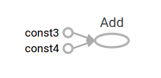

Getting Started With TensorFlow
Table of Contents
This guide gets you started programming in TensorFlow. Before using this guide, install TensorFlow. To get the most out of this guide, you should know the following:
- How to program in Python
- At least a little bit about arrays
- Ideally, something about machine learning. However, if you know little or nothing about machine learning, then this is still the first guide you should read
TensorFlow provides multiple APIs. The lowest level API– TensorFlow Core – provides you with complete programming control. We recommend TensorFlow Core for machine learning researchers and others who require fine levels of control over their models. The higher level APIs are built on top of TensorFlow Core. These higher level APIs are typically easier to learn and use than TensorFlow Core. In addition, the higher level APIs make repetitive tasks easier and more consistent between different users. A high-level API like tf.estimator helps you manage data sets, estimators, training and inference
This guide begins with a tutorial on TensorFlow Core. Later, we demonstrate how to implement the same model in tf.estimator. Knowing TensorFlow Core principles will give you a great mental model of how things are working internally when you use the more compact higher level API
tensors
The central unit of data in TensorFlow is the tensor . A tensor consists of a set of primitive values shaped into an array of any number of dimensions. A tensor's rank is its number of dimensions. Here are some examples of tensors:
3 # a rank 0 tensor; a scalar with shape [] [1., 2., 3.] # a rank 1 tensor; a vector with shape [3] [[1., 2., 3.], [4., 5., 6.]] # a rank 2 tensor; a matrix with shape [2, 3] [[[1., 2., 3.]], [[7., 8., 9.]]] # a rank 3 tensor with shape [2, 1, 3]
tensorFlow core
import TensorFlow
The canonical import statement for TensorFlow programs is as follows:
import tensorflow as tf
This gives Python access to all of TensorFlow's classes, methods, and symbols. Most of the documentation assumes you have already done this
computational graph
You might think of TensorFlow Core programs as consisting of two discrete sections:
- Building the computational graph
- Running the computational graph
A computational graph is a series of TensorFlow operations arranged into a graph of nodes. Let's build a simple computational graph. Each node takes zero or more tensors as inputs and produces a tensor as an output. One type of node is a constant. Like all TensorFlow constants, it takes no inputs, and it outputs a value it stores internally. We can create two floating point Tensors node1 and node2 as follows:
node1 = tf.constant(3.0, dtype=tf.float32) node2 = tf.constant(4.0) # also tf.float32 implicitly print(node1, node2)
The final print statement produces
Tensor("Const:0", shape=(), dtype=float32) Tensor("Const_1:0", shape=(), dtype=float32)
Notice that printing the nodes does not output the values 3.0 and 4.0 as you might expect. Instead, they are nodes that, when evaluated, would produce 3.0 and 4.0, respectively. To actually evaluate the nodes, we must run the computational graph within a session . A session encapsulates the control and state of the TensorFlow runtime
The following code creates a Session object and then invokes its run method to run enough of the computational graph to evaluate node1 and node2 . By running the computational graph in a session as follows:
sess = tf.Session() print(sess.run([node1, node2]))
we see the expected values of 3.0 and 4.0:
[3.0, 4.0]
We can build more complicated computations by combining Tensor nodes with operations (Operations are also nodes). For example, we can add our two constant nodes and produce a new graph as follows:
from __future__ import print_function node3 = tf.add(node1, node2) print("node3:", node3) print("sess.run(node3):", sess.run(node3))
The last two print statements produce
node3: Tensor("Add:0", shape=(), dtype=float32)
sess.run(node3): 7.0
TensorFlow provides a utility called TensorBoard that can display a picture of the computational graph. Here is a screenshot showing how TensorBoard visualizes the graph:

As it stands, this graph is not especially interesting because it always produces a constant result. A graph can be parameterized to accept external inputs, known as placeholders . A placeholder is a promise to provide a value later
a = tf.placeholder(tf.float32) b = tf.placeholder(tf.float32) adder_node = a + b # + provides a shortcut for tf.add(a, b)
The preceding three lines are a bit like a function or a lambda in which we define two input parameters (a and b) and then an operation on them. We can evaluate this graph with multiple inputs by using the feed_dict argument to the run method to feed concrete values to the placeholders:
print(sess.run(adder_node, {a: 3, b: 4.5})) print(sess.run(adder_node, {a: [1, 3], b: [2, 4]}))
resulting in the output
7.5 [ 3. 7.]
In TensorBoard, the graph looks like this:

We can make the computational graph more complex by adding another operation. For example,
add_and_triple = adder_node * 3. print(sess.run(add_and_triple, {a: 3, b: 4.5}))
produces the output
22.5
The preceding computational graph would look as follows in TensorBoard:

In machine learning we will typically want a model that can take arbitrary inputs, such as the one above. To make the model trainable, we need to be able to modify the graph to get new outputs with the same input. Variables allow us to add trainable parameters to a graph. They are constructed with a type and initial value:
W = tf.Variable([.3], dtype=tf.float32)
b = tf.Variable([-.3], dtype=tf.float32)
x = tf.placeholder(tf.float32)
linear_model = W*x + b
Constants are initialized when you call tf.constant , and their value can never change. By contrast, variables are not initialized when you call tf.Variable . To initialize all the variables in a TensorFlow program, you must explicitly call a special operation as follows:
init = tf.global_variables_initializer()
sess.run(init)
It is important to realize init is a handle to the TensorFlow sub-graph that initializes all the global variables. Until we call sess.run , the variables are uninitialized
Since x is a placeholder, we can evaluate linear_model for several values of x simultaneously as follows:
print(sess.run(linear_model, {x: [1, 2, 3, 4]}))
to produce the output
[ 0. 0.30000001 0.60000002 0.90000004]
We've created a model, but we don't know how good it is yet. To evaluate the model on training data, we need a y placeholder to provide the desired values, and we need to write a loss function.
A loss function measures how far apart the current model is from the provided data. We'll use a standard loss model for linear regression, which sums the squares of the deltas between the current model and the provided data. linear_model - y creates a vector where each element is the corresponding example's error delta. We call tf.square to square that error. Then, we sum all the squared errors to create a single scalar that abstracts the error of all examples using tf.reduce_sum :
y = tf.placeholder(tf.float32) squared_deltas = tf.square(linear_model - y) loss = tf.reduce_sum(squared_deltas) print(sess.run(loss, {x: [1, 2, 3, 4], y: [0, -1, -2, -3]}))
producing the loss value
23.66
We could improve this manually by reassigning the values of W and b to the perfect values of -1 and 1. A variable is initialized to the value provided to tf.Variable but can be changed using operations like tf.assign . For example, W=-1 and b=1 are the optimal parameters for our model. We can change W and b accordingly:
fixW = tf.assign(W, [-1.]) fixb = tf.assign(b, [1.]) sess.run([fixW, fixb]) print(sess.run(loss, {x: [1, 2, 3, 4], y: [0, -1, -2, -3]}))
The final print shows the loss now is zero
0.0
We guessed the "perfect" values of W and b , but the whole point of machine learning is to find the correct model parameters automatically. We will show how to accomplish this in the next section
tf.train API
A complete discussion of machine learning is out of the scope of this tutorial. However, TensorFlow provides optimizers that slowly change each variable in order to minimize the loss function. The simplest optimizer is gradient descent. It modifies each variable according to the magnitude of the derivative of loss with respect to that variable. In general, computing symbolic derivatives manually is tedious and error-prone. Consequently, TensorFlow can automatically produce derivatives given only a description of the model using the function tf.gradients. For simplicity, optimizers typically do this for you. For example
optimizer = tf.train.GradientDescentOptimizer(0.01) train = optimizer.minimize(loss) sess.run(init) # reset values to incorrect defaults. for i in range(1000): sess.run(train, {x: [1, 2, 3, 4], y: [0, -1, -2, -3]}) print(sess.run([W, b]))
results in the final model parameters:
[array([-0.9999969], dtype=float32), array([ 0.99999082], dtype=float32)]
Now we have done actual machine learning! Although this simple linear regression model does not require much TensorFlow core code, more complicated models and methods to feed data into your models necessitate more code. Thus, TensorFlow provides higher level abstractions for common patterns, structures, and functionality. We will learn how to use some of these abstractions in the next section
linear regression
The completed trainable linear regression model is shown here:
import tensorflow as tf # Model parameters W = tf.Variable([.3], dtype=tf.float32) b = tf.Variable([-.3], dtype=tf.float32) # Model input and output x = tf.placeholder(tf.float32) linear_model = W*x + b y = tf.placeholder(tf.float32) # loss loss = tf.reduce_sum(tf.square(linear_model - y)) # sum of the squares # optimizer optimizer = tf.train.GradientDescentOptimizer(0.01) train = optimizer.minimize(loss) # training data x_train = [1, 2, 3, 4] y_train = [0, -1, -2, -3] # training loop init = tf.global_variables_initializer() sess = tf.Session() sess.run(init) # reset values to wrong for i in range(1000): sess.run(train, {x: x_train, y: y_train}) # evaluate training accuracy curr_W, curr_b, curr_loss = sess.run([W, b, loss], {x: x_train, y: y_train}) print("W: %s b: %s loss: %s"%(curr_W, curr_b, curr_loss))
When run, it produces
W: [-0.9999969] b: [ 0.99999082] loss: 5.69997e-11
Notice that the loss is a very small number (very close to zero). If you run this program, your loss may not be exactly the same as the aforementioned loss because the model is initialized with pseudorandom values.
This more complicated program can still be visualized in TensorBoard:

tf.estimator
tf.estimator is a high-level TensorFlow library that simplifies the mechanics of machine learning, including the following:
- running training loops
- running evaluation loops
- managing data sets
tf.estimator defines many common models
basic usage
Notice how much simpler the linear regression program becomes with tf.estimator:
# NumPy is often used to load, manipulate and preprocess data. import numpy as np import tensorflow as tf # Declare list of features. We only have one numeric feature. There are many # other types of columns that are more complicated and useful. feature_columns = [tf.feature_column.numeric_column("x", shape=[1])] # An estimator is the front end to invoke training (fitting) and evaluation # (inference). There are many predefined types like linear regression, # linear classification, and many neural network classifiers and regressors. # The following code provides an estimator that does linear regression. estimator = tf.estimator.LinearRegressor(feature_columns=feature_columns) # TensorFlow provides many helper methods to read and set up data sets. # Here we use two data sets: one for training and one for evaluation # We have to tell the function how many batches # of data (num_epochs) we want and how big each batch should be. x_train = np.array([1., 2., 3., 4.]) y_train = np.array([0., -1., -2., -3.]) x_eval = np.array([2., 5., 8., 1.]) y_eval = np.array([-1.01, -4.1, -7, 0.]) input_fn = tf.estimator.inputs.numpy_input_fn( {"x": x_train}, y_train, batch_size=4, num_epochs=None, shuffle=True) train_input_fn = tf.estimator.inputs.numpy_input_fn( {"x": x_train}, y_train, batch_size=4, num_epochs=1000, shuffle=False) eval_input_fn = tf.estimator.inputs.numpy_input_fn( {"x": x_eval}, y_eval, batch_size=4, num_epochs=1000, shuffle=False) # We can invoke 1000 training steps by invoking the method and passing the # training data set. estimator.train(input_fn=input_fn, steps=1000) # Here we evaluate how well our model did. train_metrics = estimator.evaluate(input_fn=train_input_fn) eval_metrics = estimator.evaluate(input_fn=eval_input_fn) print("train metrics: %r"% train_metrics) print("eval metrics: %r"% eval_metrics)
When run, it produces something like:
train metrics: {'average_loss': 7.8779564e-08, 'loss': 3.1511826e-07, 'global_step': 1000}
eval metrics: {'average_loss': 0.0025512243, 'loss': 0.010204897, 'global_step': 1000}
Notice how our eval data has a higher loss, but it is still close to zero. That means we are learning properly
custom model
tf.estimator does not lock you into its predefined models. Suppose we wanted to create a custom model that is not built into TensorFlow. We can still retain the high level abstraction of data set, feeding, training, etc. of tf.estimator. For illustration, we will show how to implement our own equivalent model to LinearRegressor using our knowledge of the lower level TensorFlow API
To define a custom model that works with tf.estimator, we need to use tf.estimator.Estimator . tf.estimator.LinearRegressor is actually a sub-class of tf.estimator.Estimator. Instead of sub-classing Estimator, we simply provide Estimator a function model_fn that tells tf.estimator how it can evaluate predictions, training steps, and loss. The code is as follows:
import numpy as np import tensorflow as tf # Declare list of features, we only have one real-valued feature def model_fn(features, labels, mode): # Build a linear model and predict values W = tf.get_variable("W", [1], dtype=tf.float64) b = tf.get_variable("b", [1], dtype=tf.float64) y = W*features['x'] + b # Loss sub-graph loss = tf.reduce_sum(tf.square(y - labels)) # Training sub-graph global_step = tf.train.get_global_step() optimizer = tf.train.GradientDescentOptimizer(0.01) train = tf.group(optimizer.minimize(loss), tf.assign_add(global_step, 1)) # EstimatorSpec connects subgraphs we built to the # appropriate functionality. return tf.estimator.EstimatorSpec( mode=mode, predictions=y, loss=loss, train_op=train) estimator = tf.estimator.Estimator(model_fn=model_fn) # define our data sets x_train = np.array([1., 2., 3., 4.]) y_train = np.array([0., -1., -2., -3.]) x_eval = np.array([2., 5., 8., 1.]) y_eval = np.array([-1.01, -4.1, -7., 0.]) input_fn = tf.estimator.inputs.numpy_input_fn( {"x": x_train}, y_train, batch_size=4, num_epochs=None, shuffle=True) train_input_fn = tf.estimator.inputs.numpy_input_fn( {"x": x_train}, y_train, batch_size=4, num_epochs=1000, shuffle=False) eval_input_fn = tf.estimator.inputs.numpy_input_fn( {"x": x_eval}, y_eval, batch_size=4, num_epochs=1000, shuffle=False) # train estimator.train(input_fn=input_fn, steps=1000) # Here we evaluate how well our model did. train_metrics = estimator.evaluate(input_fn=train_input_fn) eval_metrics = estimator.evaluate(input_fn=eval_input_fn) print("train metrics: %r"% train_metrics) print("eval metrics: %r"% eval_metrics)
When run, it produces:
train metrics: {'average_loss': 7.8779564e-08, 'loss': 3.1511826e-07, 'global_step': 1000}
eval metrics: {'average_loss': 0.0025512243, 'loss': 0.010204897, 'global_step': 1000}
Notice: how the contents of the custom model_fn() function are very similar to our manual model training loop from the lower level API